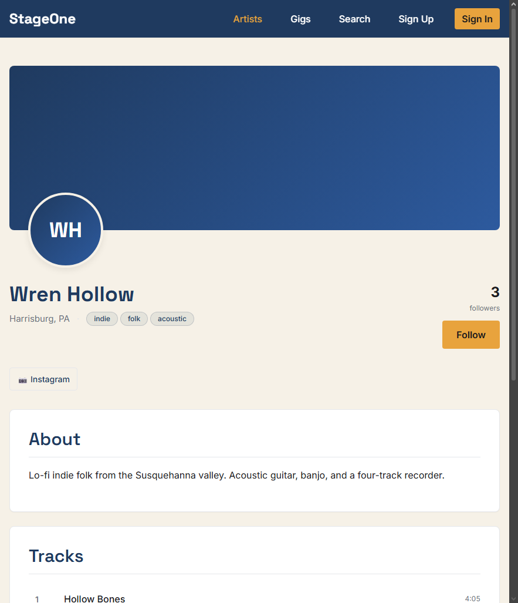
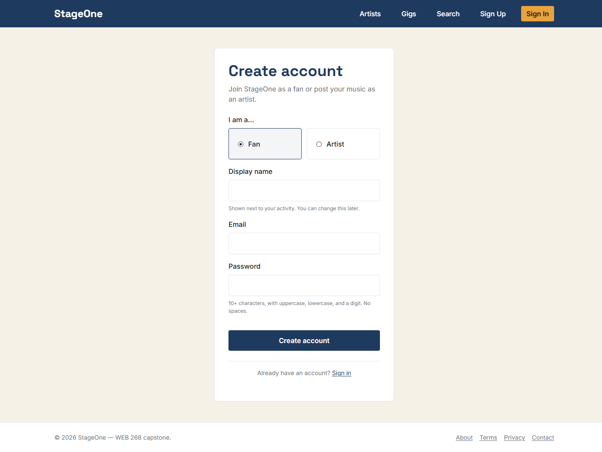
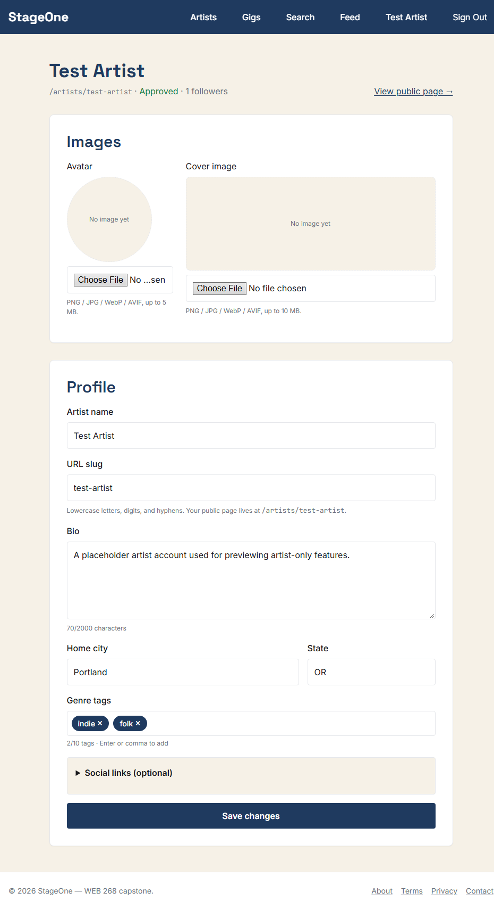

StageOne
An indie-musician discovery platform where local artists publish profiles, tracks, and gigs, and fans follow them. A solo full-stack capstone that is still in progress.
- Status
- In progress, working toward release v1.0-rc
- Started
- Built with
- Course
- WEB 268, Web Program Capstone (Spring 2026)
- Source code
- github.com/cihake/stageone
- Live site
- mystageone.org

Overview
StageOne is a web app for finding local indie music. Streaming services are built for established artists and social apps are built for viral posts, so a small-town band's bio, tracks, and next show end up scattered across three or four places. StageOne puts them on one page: an artist profile with a bio, photos, playable tracks, and upcoming gigs, plus a follow button so fans hear about new releases and shows.
It is my capstone for WEB 268. The course asked for a real front end and back end, a database with at least four tables of ten or more fields, CRUD from the front end, and original multimedia. I treated it as a client project: I wrote a needs assessment, a website specification, and a release plan with five numbered releases before building anything. The site is live but unfinished, and this page says which parts are done.
What works today
- Sign up and sign in with an email and password. Accounts have one of three roles: fan, artist, or admin.
- Public artist directory and artist pages, with a persistent audio player at the bottom of the screen that keeps playing while you browse.
- An artist dashboard where artists create and edit their profile and upload an avatar and cover image.
- Follow and unfollow, with a personal feed of new tracks and upcoming gigs from the artists a fan follows.
- A gigs page, and keyword search across artists, tracks, and gigs.
- An admin page where new artist profiles are approved before they appear publicly.
- An API with create, read, update, and delete routes for tracks and gigs, checked with Zod schemas and limited by role.
More screenshots


Still to come
- Dashboard screens for artists to manage their own tracks and gigs, including audio upload. The server routes exist; the screens do not yet.
- An AI assistant that answers questions like “what’s a good indie-folk show this Friday?” using the site’s own catalog. The planned design uses OpenAI with a local Llama 3 fallback. The search page has a disabled “AI Search” tab reserved for it.
- Messages between artists and booking contacts.
- Email notifications for followers, an accessibility and performance pass against the targets in my specification, and original multimedia: a logo, audio stings, and an intro video.
How it’s built
The repository is an npm workspace with two packages. The server is Node, Express, and Mongoose with TypeScript, backed by MongoDB Atlas. The client is React 18 with TypeScript, built with Vite and routed with React Router. The client is hosted on Vercel and the API on Render, both on free tiers, and images go through Cloudinary.
- Database. Six collections: users, artists, tracks, gigs, follows, and messages. Five of them have ten or more fields, which clears the course requirement. Follows are a lean join collection between users and artists, with a unique pair so nobody can follow twice.
- Authentication. I built it from scratch instead of using a login service, to show how authentication actually works. Passwords are hashed with bcrypt. Sessions use a short-lived access token and a refresh token, both in httpOnly cookies. Role checks run in middleware, so an artist can only change their own profile, tracks, and gigs.
- Validation and limits. Zod schemas check input on the server. Sign-in routes are rate limited, and image uploads are checked for file type and size before they are sent to Cloudinary.
- Design. A small set of color and type tokens, taken from my color comps (navy, amber, and cream), is the single source for styling. A skip link, landmarks, and labelled controls are part of the layout from the start.
- Workflow. ESLint, Prettier, and Husky git hooks run on every commit, and commit messages follow Conventional Commits.
Decisions and problems so far
- Cookies across two domains. In production the client and the API live on different domains, which browsers treat as cross-site. A cookie that is fine in development gets dropped there. It has to be marked SameSite=None and Secure to be sent at all, so the cookie settings differ between development and production.
- Stolen refresh tokens. Every refresh issues a new token and retires the old one. If a retired token is ever presented again, the server assumes it was copied and signs that user out everywhere.
- Artists following themselves. This slipped through at first. It inflated an artist’s own follower count and put their own tracks in their feed. The server now rejects it.